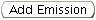

Previous Topic
Next Topic
| Common User Interface Elements
|
Previous Topic |
Next Topic |
Input fields provide a mechanism for you to enter data into the system. You will commonly find input fields in windows in which you fill in or update data about your facility, including when you apply for a permit or submit an emissions or compliance report. You will also encounter input fields in pop-up windows that appear when you invoke particular operations. Each instance of an input field type looks the same and works the same way throughout the system, no matter where it appears. This topic covers the various input types, illustrating their appearance and describing their operation. These include simple data input field types, such as
as well as more complex mechanisms such as The input mechanisms are listed above in approximate order of the frequency with which you will encounter them in the system.Although clearly related to the process of entering and editing data,
edit
operations buttons and data validation are covered in more detail on
other Help topic pages (see
Related Help Topics below).
In either of these cases, you simply place the cursor in the field, type the information you wish to enter and then select Enter on the keyboard or move to a different field on the screen.
Some, but not all, short text input fields, most notably Facility ID and Facility Name in Search Criteria windows, support the concept of wildcards. This means that you can use a wildcard character, either '*' or '%' to match any number of other characters in that position. For example, if you enter "Univ*" in a Facility Name will match all of the following facility names: University of Dayton, University of Toledo, Univar, USA, Universal Metal Products, etc. However, if you are looking for Miami University, you should put a wildcard character at the beginning of the string as well. If you want to limit your search to universities, the you would want to use the string *University* to retrieve them all.
You may use either wildcard character in any position in
a string and you may use both characters in the same string. For example,
the string *univ*l* will retrieve all the facilities with the word Universal
anywhere in their name. It will also, however, retrieve The Ohio State University
at Lima and Kent State University - Fleet Services, among others. Most of the
fields that take wildcards have a 'hint' below the field that shows you examples of
some search strings that use wildcards.
Some pages ask you to enter a date. You may, of course, simply type in the
date you wish to specify.
The system accepts nearly all formats for your
date input: one or two digits for month and day; two or four digits for
year; '-' or '/'
to separate the date components. You cannot, however, mix the separator
characters in the same date string. For example, 1-6/07 is not a
valid input for a date field!
Alternatively, you may select a date from a calendar. Every date input field
shows a calendar icon ( )
next to it on the right. When you click on this icon, it opens to a
calendar that allows you to select a date.
)
next to it on the right. When you click on this icon, it opens to a
calendar that allows you to select a date.
The calendar initially comes up with today's date highlighted. You may, however, navigate within the calendar, using the month and year pick lists or the left () and right () arrows next to the pick lists to move either date component backward or forward. Once the calendar shows the month you want, then click on the day-of-the-month to select the date.
Back to TopYou will see check boxes on input pages when you, for example, Change Facility Detail or Create or Edit a PTI/PTIO Application. Check boxes display indicators for whether or not your facility is Portable, and to indicate which federal rules apply to your facility.
The check box field shown in is essentially a Yes/No or True/False indicator. If the box is checked, as on the right, then the item is Yes/True; if it is not checked, as on the left, then the item is No/False. When you are entering or modifying data, you can change a check box simply by clicking in the box.
Each check box is independent of any other check boxes that may be appear to be displayed in a group. Whether a check box is marked or does not affect whether any other check box is marked.
Back to TopThe check box field shown in is essentially a Yes/No or True/False indicator. If the box is checked, as on the right, then the item is Yes/True; if it is not checked, as on the left, then the item is No/False. When you are entering or modifying data, you can change a check box simply by clicking in the box.
Back to TopThis figure actually illustrates several user interface concepts. Check boxes are used here for several purposes, including selecting pollutants that you have already added to the table and may now wish to delete, indicating whether a there are charges associated with each pollutant in the table (you may not edit this one; it's only there for your information), and any information in your report that you wish to remain Trade Secret. The Pollutant, Method, and Unit columns illustrate pick lists, while the data used to report or compute emissions are text input fields, where the required text input is numeric.
At the bottom of the list, you will find the  button which gives you the capability to add pollutants to the list of pollutants for which you are reporting emissions. When you select this button, the system opens a new row in the table with a pick list of the possible values for the key field of the row you are adding (in this case, pollutants). Entering items in a list or table is covered in more detail in the discussion of Edit Button Operations.
Back to TopYou may select one or more EUs on either side of the shuttle. (To select more than one, hold down the CTRL key while you select the EUs.) Then, select the appropriate button to move the selected EUs in the direction you wish to move them. In this example, the user has selected EUs B011, B012 and B013 from among the currently-excluded EUs. Upon clicking on the right arrow (img src="images/right_arrow.jpg") between the two sides of the shuttle, the system will move these EUs from the Excluded EUs list to the IncludedEUs list. Note that, rather than selecting individual EUs, you may Include ALL the EUs in a facility that are eligible to be included in the target application.
Back to TopCopyright © 1996, 2004, Oracle. All rights reserved.
{kind=link}
{kind=link}